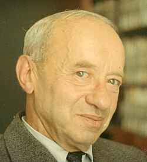

1901-1983
Alfred Tarski

Portrait: George Bergman, CC BY-SA 4.0, Wikimedia Commons.
Events (4)
- 1915Model theory beginnings (Löwenheim-Skolem)
systematiser · Logic & foundations
- 1920Many-valued logic
developer · Logic & foundations
- 1931Tarski's quantifier elimination for real algebra (decision method)
originator · Algebraic geometry
- 1932Tarski's semantic truth definition and model theory
developer · Logic & foundations